솔애드 사용 도움말
동영상 게시판에 광고를 붙이고, 광고 요청을 받아 처리하고, 결과를 통계로 확인하는 방법이에요. 설치가 끝났다는 전제로 설명해요.
1. 한눈에 보기
솔애드는 세 부분으로 나뉘어요.
| 어디 | 누가 | 무엇을 |
|---|---|---|
| 동영상 게시판 | 회원·방문자 | 영상을 올리고 봐요. 편성한 광고가 영상 앞·중간·뒤에 나와요. |
| 광고 요청 게시판 | 광고주(회원) | 광고 기간·위치·예산과 소재를 보내고 처리 상황을 확인해요. |
솔애드 관리자 /ads/ |
운영자 | 광고 소재, 지면 편성, 플레이어 모양, 영상 추가 기능, 통계를 관리해요. |
솔애드 관리자는 그누보드 관리자 → 게시판관리 → 솔애드 광고 관리, 또는 주소창에
/ads/를 입력해 열어요.
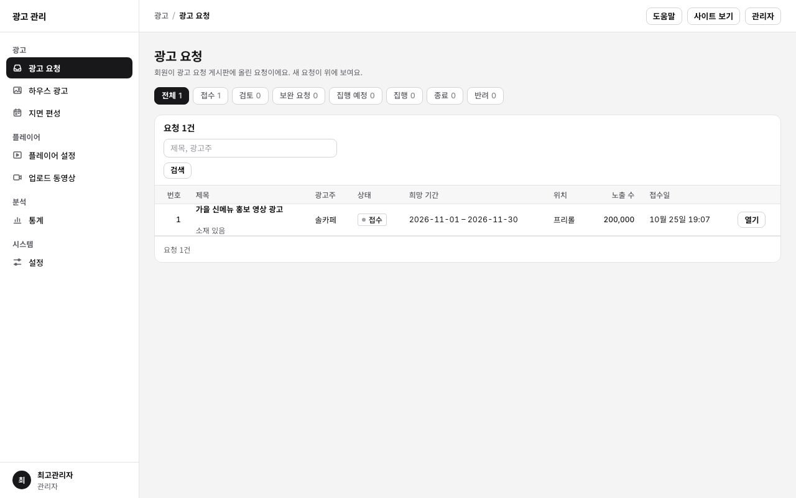
2. 광고 내보내기 순서
- 하우스 광고에서 광고 영상(또는 이미지·GIF)을 등록해요.
- 지면 편성에서 어디에(사이트·게시판·분류·영상) 어떤 구간(프리롤·미드롤·포스트롤)으로 넣을지 정해요.
- 게시 전 미리보기로 확인해요. 통계에 남지 않아요.
- 초안 저장 뒤 저장한 초안 게시를 눌러요. 게시해야 사이트에 반영돼요.
- 게시본 재생 테스트나 실제 게시판에서 재생해 봐요.
- 통계에서 시작·완료·클릭을 확인해요.
3. 하우스 광고
사이트가 직접 내보내는 광고 소재를 모아 두는 곳이에요. 광고 요청으로 받은 소재도 여기에 등록해서 써요.
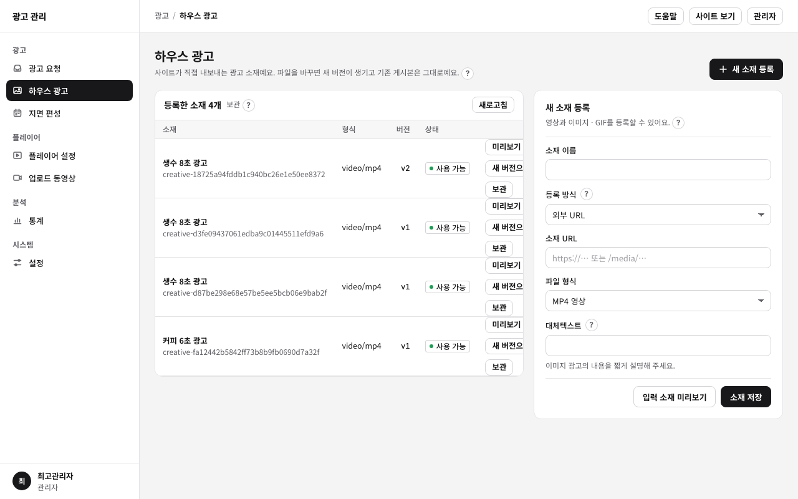
새 소재 등록
| 항목 | 설명 |
|---|---|
| 소재 이름 | 관리자 화면에서 구분하는 이름이에요. 시청자에게는 보이지 않아요. |
| 등록 방식 | 파일 업로드(이 서버에 저장) 또는 외부 URL(다른 서버의 파일 주소) |
| 파일 형식 | MP4·WebM 영상, 이미지, GIF |
| 대체텍스트 | 이미지 광고의 내용을 짧게 적어요. 화면 낭독기가 읽어요. |
[입력 소재 미리보기]로 저장 전에 확인하고 [소재 저장]을 눌러요.
새 버전과 보관
- 새 버전으로: 파일을 바꾸면 새 버전(v2, v3…)이 생기고, 이미 게시한 편성은 예전 버전을 그대로 써요. 새 버전을 쓰려면 편성에서 바꿔 게시해요.
- 보관: 더 쓰지 않는 소재를 새 편성 목록에서 빼요. 되돌릴 수 없어요.
4. 지면 편성
광고를 어디에 어떤 순서로 보여 줄지 정해요.
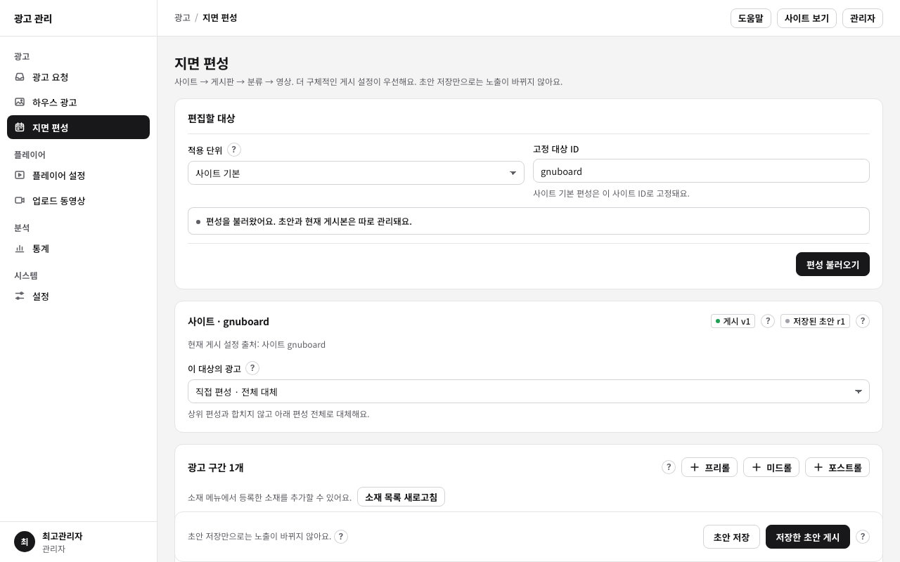
적용 단위와 상속
편성은 사이트 기본 → 게시판 → 분류 → 개별 영상 네 단계에 붙일 수 있어요. 재생할 때는 영상에서 시작해 위로 올라가며 가장 가까운 게시 편성 하나만 써요. 편성끼리 합치지 않아요.
| 이 대상의 광고 | 동작 |
|---|---|
| 상위 설정 상속 | 이 대상에는 편성을 두지 않고 위 단계를 따라요. 사이트 기본에서는 고를 수 없어요. |
| 직접 편성 · 전체 대체 | 이 대상의 광고 구간을 직접 정해요. 위 단계 편성은 쓰지 않아요. |
| 광고 비활성화 · 상속 중단 | 이 대상에서 광고를 끄고, 위 단계 편성이 내려오는 것도 막아요. |
게시판·분류·영상은 이름으로 검색해서 골라요. 동영상 게시판 글 하나의 고정 영상 ID는
게시판TABLE:글번호:main 형식이에요(예: video:1:main).
광고 구간
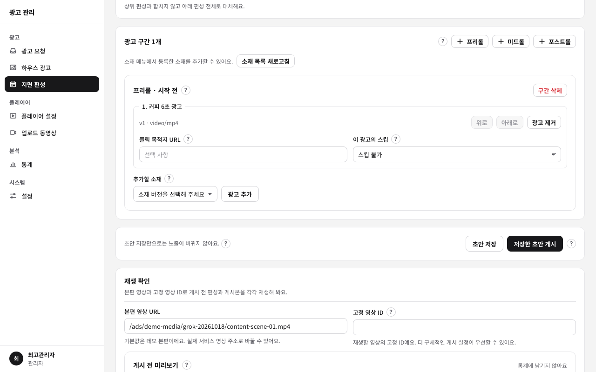
| 구간 | 나오는 때 |
|---|---|
| 프리롤 | 본편 재생 전 |
| 미드롤 | 본편이 정한 초를 지날 때. 광고가 끝나면 멈췄던 자리부터 이어져요. |
| 포스트롤 | 본편이 끝난 뒤 |
- 한 구간에 광고를 여러 개 넣으면 목록 순서대로 모두 재생해요. 위로·아래로로 순서를 바꿔요.
- 광고가 둘 이상이면 광고 중 하나만 골라 보여 주기(무작위)를 켤 수 있어요. 재생할 때마다 같은 확률로 하나만 나와요.
- 클릭 목적지 URL을 넣으면 광고 중 "광고주 사이트" 링크가 보여요.
- 이 광고의 스킵: "스킵 불가" 또는 "N초 후 현재 광고만 스킵". 스킵 대기 시간이 지나면 건너뛰기 버튼이 나와요.
- 이미지·GIF 광고는 표시 시간(초)을 정해요.
초안과 게시
- 초안 저장: 서버에 편집본을 저장해요. 재생에는 영향이 없어요. 저장할 때마다 초안 번호(r1, r2…)가 올라가요.
- 저장한 초안 게시: 저장한 초안을 실제 편성으로 확정해요. 게시 버전(v1, v2…)이 올라가고, 새로 시작하는 재생부터 적용돼요.
- 다른 관리자가 그 사이 같은 대상을 저장했으면 충돌을 알려 주고 덮어쓰지 않아요.
5. 미리보기와 재생 테스트
지면 편성 화면 아래 재생 확인에서 두 가지로 확인해요.
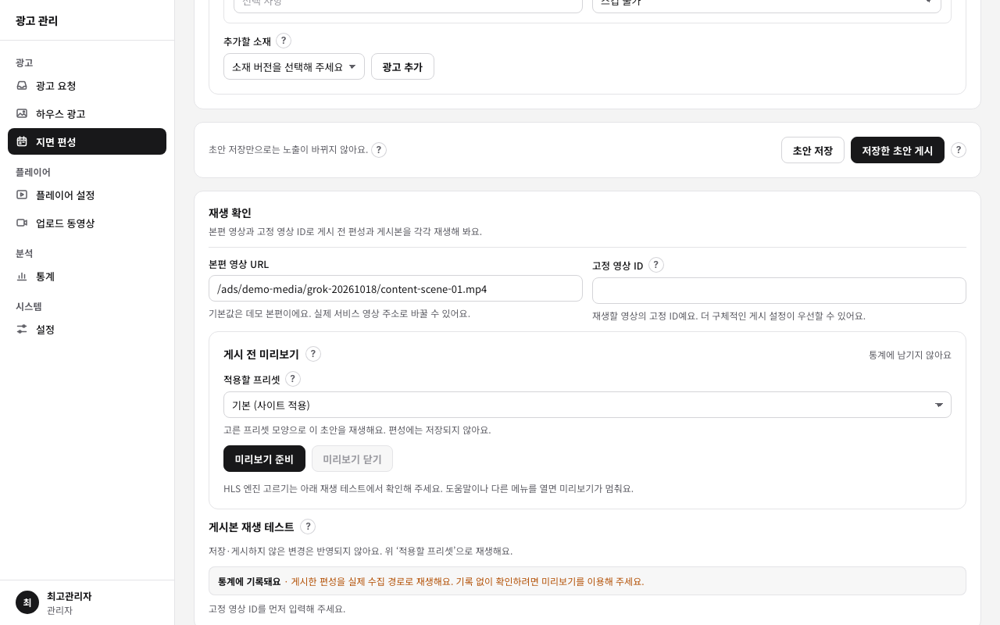
| 방법 | 무엇을 재생 | 통계 |
|---|---|---|
| 게시 전 미리보기 | 지금 편집 중인 초안(저장 전 내용 포함) | 남지 않아요 |
| 게시본 재생 테스트 | 게시한 편성. 고정 영상 ID를 넣으면 그 영상에 실제로 적용되는 편성 | 남아요 |
6. 플레이어 설정
사이트의 모든 영상 플레이어가 쓰는 설정 하나를 고쳐요. 저장하면 바로 적용되고, 오른쪽 미리보기는 저장 전 입력도 보여 줘요.
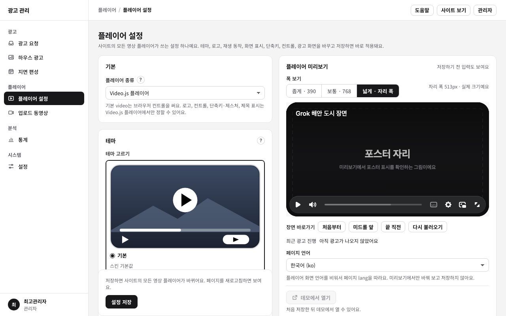
| 묶음 | 정하는 것 |
|---|---|
| 기본 | 플레이어 종류: Video.js 플레이어 또는 브라우저 기본 video. 로고·컨트롤·단축키·제목 표시는 Video.js 플레이어에서만 정할 수 있어요. |
| 테마 | 기본·플랫·둥근 테두리 같은 모양과 강조색 |
| 로고 | 보관함이나 이미지 주소로 로고를 고르고 위치·폭·여백·불투명도·링크·대체 텍스트를 정해요. |
| 컨트롤 | 앞뒤로 건너뛰는 초(5·10·15·30초)와 이전·이후 버튼 위치(컨트롤 막대 또는 화면 가운데) |
| 재생 동작 | 시작과 끝, 화면을 누를 때의 동작, 미리 받기 |
| 화면 표시 | 제목 같은 화면 위 표시 |
| 언어 | 플레이어 버튼과 안내의 언어. 비우면 페이지 언어를 따라요. |
| 광고 화면 | 건너뛰기·대기·광고 시간 문구, 광고 강조색, 건너뛰기 버튼 모서리, 광고 글자 크기 |
아래 [설정 저장]을 누르면 사이트 전체에 반영돼요. 이미 열려 있는 페이지는 새로고침해야 보여요.
7. 업로드 동영상
동영상 게시판에 올라온 영상을 모아 보고, 서버에 ffmpeg가 있으면 커버 이미지·진행바 미리보기 썸네일·하이라이트를 만들어요.

- 게시판 수정의 솔애드 영상 탭에서 쓸 기능을 켜요(설치 가이드 8). 오른쪽 [게시판 설정] 버튼으로 바로 갈 수 있어요.
- 영상 위치(내부 영상·외부 주소)를 고르고 제목으로 찾아요. 만들 수 있는 것은 이 서버에 올린 영상이에요.
- [모두 만들기]를 누르면 켠 기능을 한 번에 만들어요. [관리]에서 커버·진행바 썸네일·하이라이트를 하나씩 다시 만들거나 지울 수 있어요.
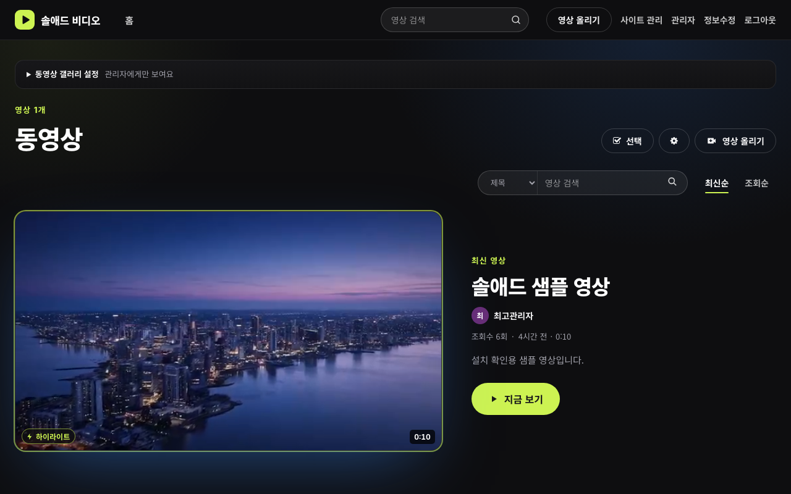
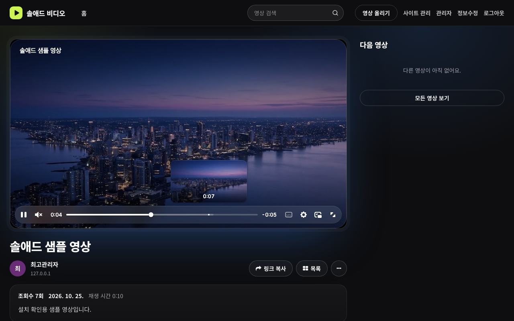
8. 통계
실제로 재생된 광고 기록을 기간·광고·영상·게시판 ID로 조회해요. 관리자 미리보기는 들어가지 않아요.
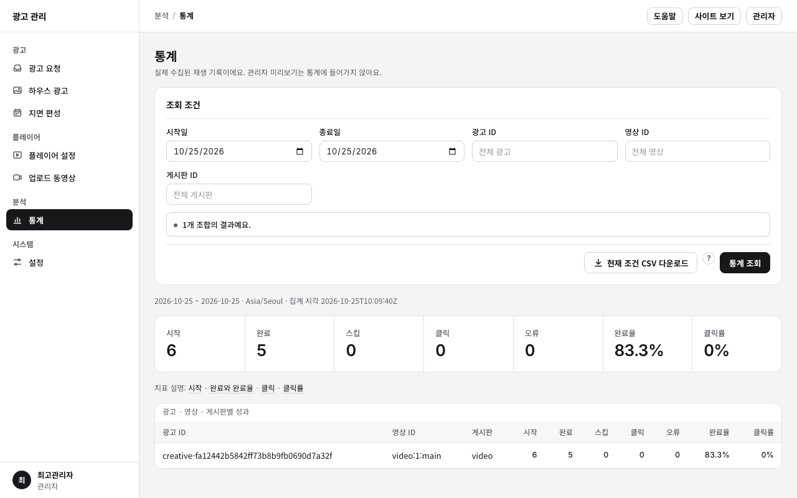
| 지표 | 뜻 |
|---|---|
| 시작 | 광고가 실제로 재생을 시작한 횟수. 완료율과 클릭률은 이 수로 나눠요. |
| 완료 · 완료율 | 끝까지 재생된 수, 완료 ÷ 시작 |
| 스킵 | 건너뛰기 버튼으로 넘긴 수 |
| 클릭 | "광고주 사이트" 링크를 누른 횟수의 합계 |
| 클릭률 | 링크를 한 번 이상 누른 시작 수 ÷ 시작 수 |
| 오류 | 소재를 불러오지 못하는 등 광고 재생이 실패한 수 |
날짜는 사이트 시간대(예: Asia/Seoul) 기준이에요. 광고주에게 결과를 보낼 때는 CSV를 내려받아 쓰세요.
9. 동영상 게시판
영상 올리기
글쓰기에서 등록 형식을 골라요.
| 등록 형식 | 설명 |
|---|---|
| 영상 파일 | MP4·WebM 파일을 올려요. 고르면 재생 시간과 썸네일(1초 지점)을 자동으로 채워요. |
| HLS 묶음 | 재생 목록(.m3u8)과 조각 파일(.ts, .m4s)을 zip 하나로 올려요. 서버가 풀어서 재생해요. |
| HLS 주소 | 다른 서버의 .m3u8 주소. 그 서버가 이 사이트의 재생을 허용(CORS)해야 해요. |
| 영상 주소 | 다른 서버의 MP4·WebM 주소 |

보기 화면
편성한 광고가 있으면 본편 전에 광고가 나와요. 광고 중에는 "광고 1/1"처럼 순서, 광고주 사이트 링크, 스킵 버튼이 보여요. 오른쪽에는 같은 게시판의 다음 영상이 나와요.

최고관리자에게는 목록 위에 동영상 갤러리 설정 상자가 보여요. 솔애드 관리자 연결, 썸네일 크기, 파일 업로드 개수·용량을 확인하고 게시판 설정으로 바로 갈 수 있어요.
10. 광고 요청 게시판
광고주가 광고를 신청하는 게시판이에요. 요청서는 관리자와 요청한 회원만 볼 수 있어요(항상 비밀글).
회원: 요청하기
[광고 요청하기]에서 광고 이름, 광고주(업체명), 희망 기간, 희망 위치(프리롤 등), 희망 게시판, 희망 노출 수, 클릭 URL, 연락처, 소재 파일(또는 소재 주소), 요청 내용을 적어 보내요.
관리자: 처리하기
요청서를 열면 오른쪽 처리 상자에 지금 상태에서 자주 하는 처리 버튼이 있어요. 버튼을 누르면 아래 처리 기록 칸에 상태와 문구가 채워지고, 내용을 확인한 뒤 [처리하기]를 누르면 상태가 바뀌어요.
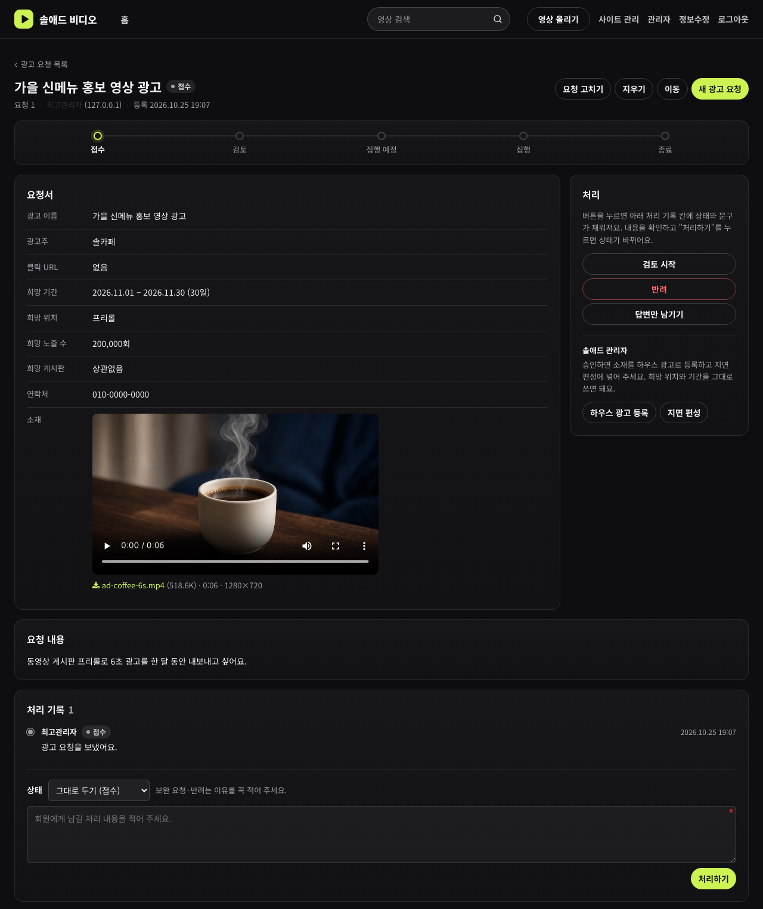
| 상태 | 뜻 |
|---|---|
| 접수 | 회원이 요청을 보냈어요. |
| 검토 | 관리자가 확인하고 있어요. |
| 보완 요청 | 회원이 내용을 고쳐야 해요. 이유를 꼭 적어 주세요. |
| 집행 예정 | 승인했고 시작일을 기다려요. 이때부터 회원은 요청을 고칠 수 없어요. |
| 집행 | 광고가 나가고 있어요. |
| 종료 | 기간이 끝났어요. |
| 반려 | 진행하지 않아요. 이유를 꼭 적어 주세요. |
11. 광고 요청 모아 보기
솔애드 관리자 광고 요청은 광고 요청 게시판의 요청을 상태별로 모아 보여 줘요. 제목·광고주로 찾고, [열기]로 게시판의 요청서로 가요. 처리는 게시판에서 해요.
12. 예제 페이지
/ads/examples/에는 플레이어와 광고를 바로 시험해 보는 페이지가 들어 있어요. 관리자에서 바꾼
플레이어 설정과 게시한 편성이 여기에도 적용돼요.
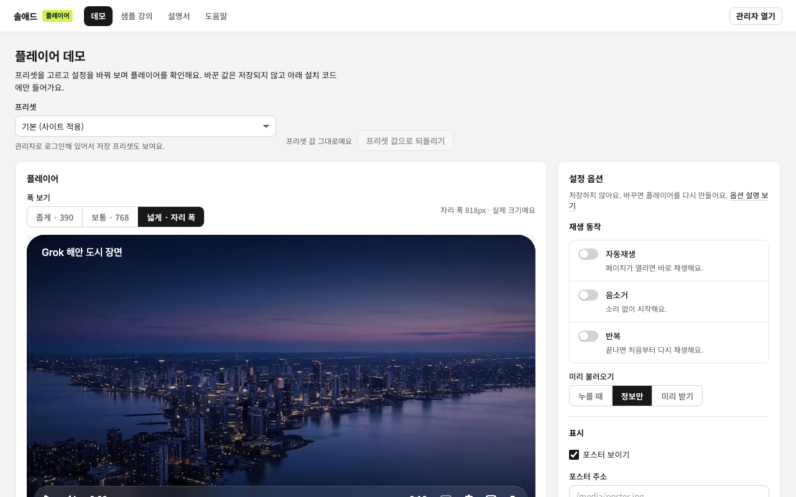
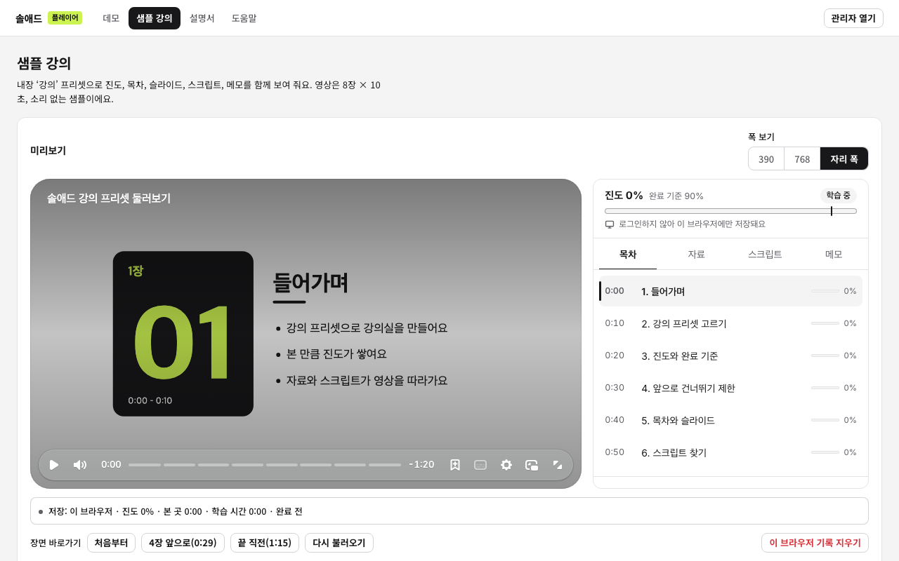
13. 자주 묻는 질문
편성을 바꿨는데 광고가 그대로예요.
초안 저장만으로는 바뀌지 않아요. 저장한 초안 게시를 눌렀는지, 이미 열려 있던 페이지를 새로고침했는지 확인하세요. 더 아래 단계(분류·영상)에 직접 편성이 있으면 그쪽이 먼저예요.
특정 영상에서만 광고를 빼고 싶어요.
지면 편성 → 적용 단위 "개별 영상"으로 그 글을 찾아 "광고 비활성화 · 상속 중단"으로 게시해요.
광고 여러 개를 번갈아 보여 주고 싶어요.
한 구간에 광고를 두 개 이상 넣고 "광고 중 하나만 골라 보여 주기(무작위)"를 켜요.
통계 숫자가 0이에요.
게시 전 미리보기는 통계에 남지 않아요. 게시본 재생 테스트나 실제 게시판에서 재생한 기록만 집계해요. 조회 기간도 확인하세요.
설정 메뉴는 무엇을 하나요?
아직 준비 중인 화면이에요. 요청 기능 사용, 최소 회원 레벨 같은 값은 지금은 그누보드 게시판 권한 설정으로 정해요.